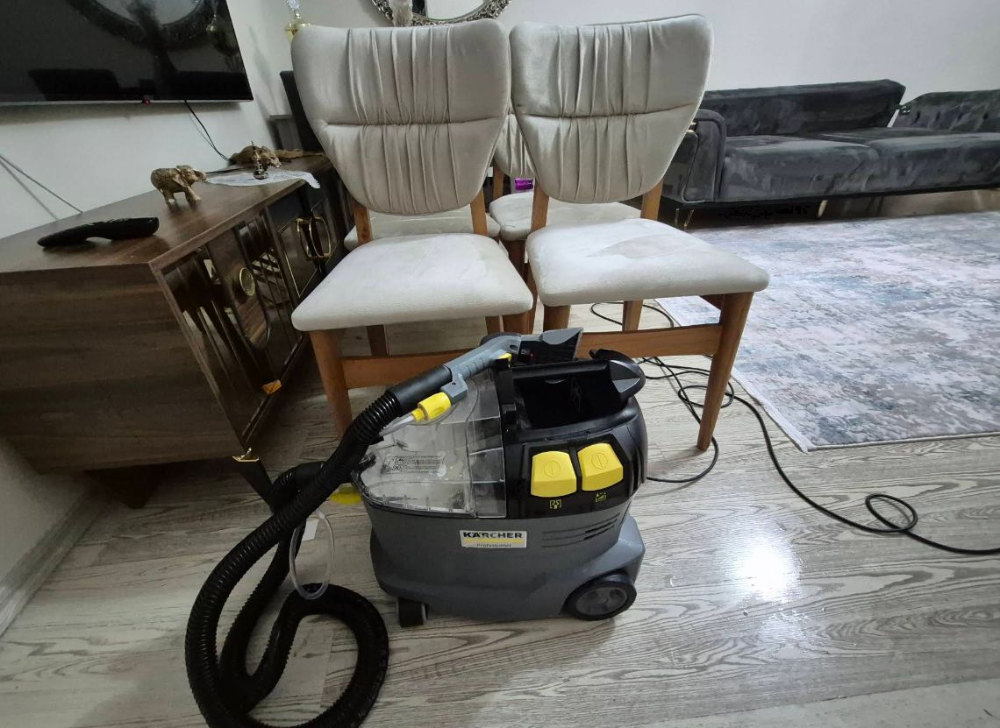

İZTEM · İZMİR / ÇİĞLİ
Çiğli Koltuk Yıkama ve Klima Temizliği
Koltuklarınızı evinizden çıkarmadan yerinde yıkıyoruz. Kärcher Puzzi 10/1 ekstraksiyon makinemizle kumaşa uygun temizlik, ayrıca klima iç ünite ve filtre temizliği yapıyoruz.
Çiğli merkezli · Menemen ve Karşıyaka'ya randevuyla hizmet
- Yerinde hizmet
- Kumaşa uygun işlem
- Önceden fiyat bilgisi
- Randevuyla çalışma

İZTEM nasıl hizmet verir?
İZTEM Koltuk Yıkama, İzmir Çiğli merkezli yerinde koltuk yıkama ve klima temizliği hizmetidir. Çiğli, Menemen ve Karşıyaka'da ev ve iş yerlerine randevuyla geliyoruz. Koltuk, L koltuk, çekyat, kanepe, berjer, kumaş sandalye ve yatak yüzeylerini malzeme ve leke durumuna göre değerlendiriyoruz.
Her kumaş ve her leke aynı şekilde temizlenmez. İşlem öncesi yüzeyin durumunu inceliyor, uygun temizleme yöntemini belirliyoruz. Her lekenin tamamen çıkacağını veya koltukların aynı sürede kuruyacağını vaat etmiyoruz.
HİZMETLERİMİZ
Evde ve iş yerinde yerinde temizlik
Önceliğimiz koltuk yıkama ve klima temizliği. Diğer döşemeli yüzeyler için de randevu oluşturabilirsiniz.

Koltuk Yıkama
Koltuk takımı, L koltuk, kanepe, çekyat ve berjer temizliği. Kumaşa uygun yöntemlerle yerinde hizmet.
Hizmet ayrıntıları →
Klima Temizliği
Uygun cihazlarda filtre ve iç ünite temizliği. İşlem kapsamı cihazın durumuna göre belirlenir.
Hizmet ayrıntıları →
Sandalye Yıkama
Yemek masası ve kumaş kaplı sandalyelerde malzemeye uygun leke ve kir temizliği.
Hizmet ayrıntıları →
Yatak Temizliği
Yatak yüzeyinde kumaşın ve dolgu malzemesinin izin verdiği ölçüde temizlik.
Hizmet ayrıntıları →UYGULAMALAR
Temizlik çalışmalarından görseller
Yüzeyin durumu ve uygun yöntem işlemin sonucunu etkiler; fotoğraflar her işlem için aynı sonucu garanti etmez.


ÇALIŞMA ŞEKLİMİZ
Neden İZTEM?
Çiğli merkezli, doğrudan iletişim kurabileceğiniz yerel bir hizmet.
Kärcher Puzzi 10/1
Koltuk kumaşına uygun yüzeylerde püskürtme ve vakumla geri çekme yöntemi kullanıyoruz.
Yerinde temizlik
Koltuklarınızı taşımanıza gerek kalmadan adresinizde çalışıyoruz.
Şeffaf beklenti
Lekenin türü, kumaşın yapısı ve önceki müdahaleler sonuç üzerinde etkili olabilir.
Doğrudan iletişim
Fotoğraf ve işlem bilgilerini WhatsApp üzerinden paylaşarak ön bilgi alabilirsiniz.
Randevu nasıl ilerliyor?
Fotoğraf gönderin
Koltuk veya klima sayısını, bulunduğunuz ilçeyi ve mümkünse fotoğrafı iletin.
Fiyatı öğrenin
İşin kapsamına göre tahmini ücret ve uygun randevu seçeneği paylaşılır.
Yerinde temizlik
Belirlenen gün adresinize gelerek yüzeye uygun temizlik işlemi uygulanır.
Birlikte kontrol
İşlem tamamlandığında yüzeyin durumu ve kuruma koşulları hakkında bilgi verilir.
MÜŞTERİ DENEYİMLERİ
İZTEM hakkında yapılan yorumlar
İşletmemize yönelik değerlendirmeleri Google Haritalar'dan inceleyebilirsiniz. Yorum sayısı ve puan zaman içinde değişebileceğinden burada sabit rakam göstermiyoruz.
HİZMET BÖLGELERİ
Çiğli, Menemen ve Karşıyaka
Çiğli merkezli çalışıyor, randevu planına göre yakın ilçelere gidiyoruz. Adresiniz için müsaitliği iletişimden teyit edebilirsiniz.
Sık sorulan sorular
Koltuk yıkama işlemi ne kadar sürer?
Süre, koltuk takımının büyüklüğüne, kumaşın özelliklerine ve kir durumuna göre değişir. Fotoğraf üzerinden ön bilgi verilebilir.
Koltuklar yıkandıktan sonra ne zaman kurur?
Kuruma süresi kumaş, nem, hava akımı ve uygulanan su miktarına bağlıdır. Kuruma tamamlanmadan koltuğu kullanmamak gerekir. Kuruma hakkında ayrıntılar.
Koltuktaki her leke çıkar mı?
Hayır. Lekenin türü ve ne kadar süredir yüzeyde olduğu sonucu etkiler. İşlem öncesi durum değerlendirilir. Leke temizliği rehberi.
Klima temizliği sırasında ev kirlenir mi?
Uygun ekipman ve koruyucu uygulamalarla çevreyi korumaya özen gösteririz. Cihazın türüne göre uygulanabilecek işlemler farklılaşabilir. Klima temizliği hakkında.
Koltuk temizliği rehberi · Klima temizliği rehberi · Tüm sorular
Fiyat ve randevu bilgisi alın
Temizlenecek yüzeyin veya klimanın fotoğrafını, bulunduğunuz ilçeyi ve uygun olduğunuz günü yazın.
Hizmet randevuyla verilir. Fiyat; işin kapsamına ve yüzeyin durumuna göre belirlenir.